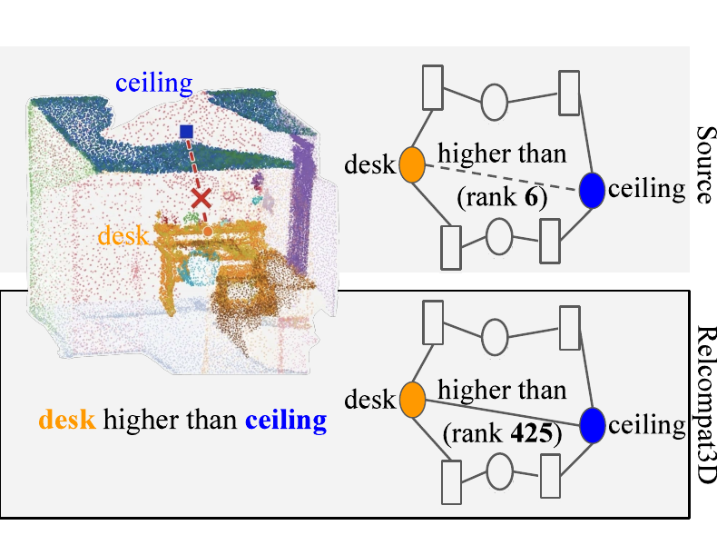
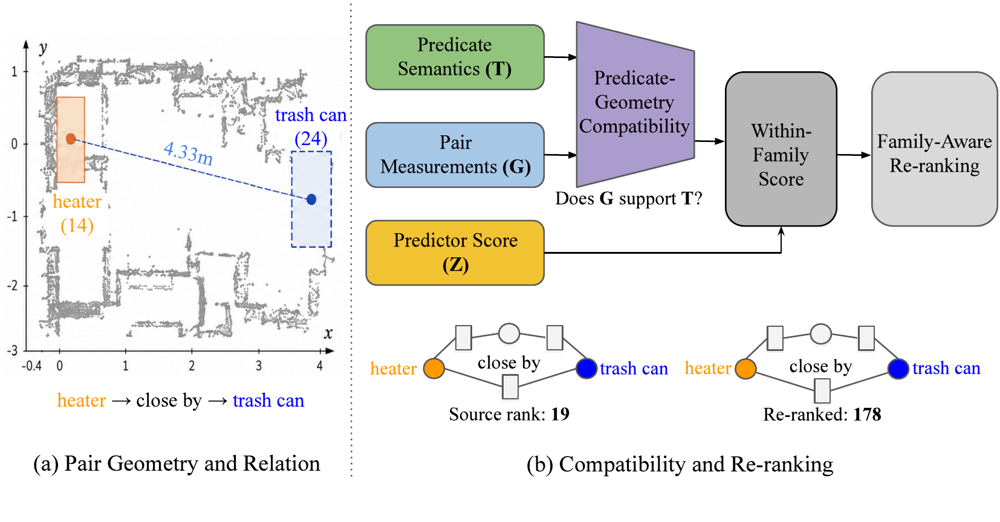
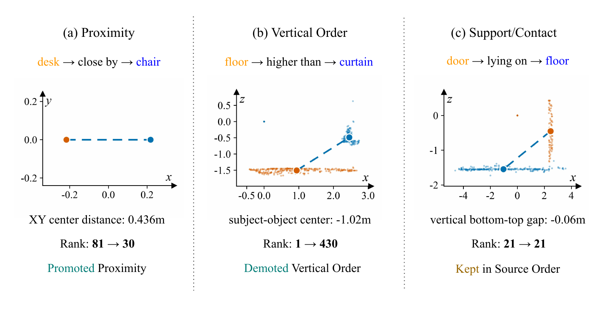
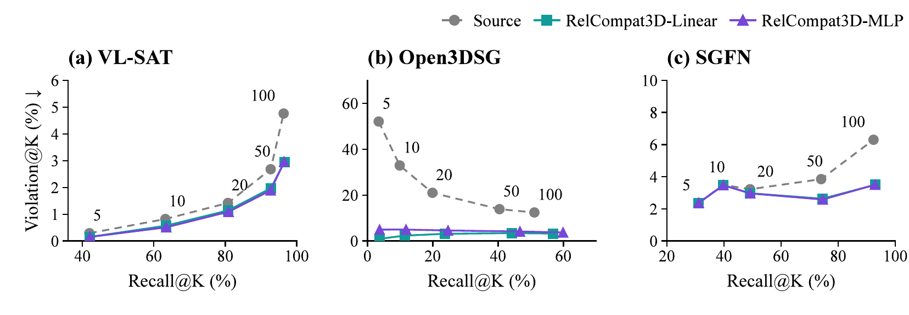

Predicate semantics
The meaning and relation family of the candidate predicate.
3D scene graph reliability
Re-Ranking 3D Scene Graph Relations with Geometric Evidence
A relation can sound plausible and still contradict the reconstructed geometry of its ordered subject–object pair. RelCompat3D learns predicate–geometry compatibility and uses it to re-rank fixed predictions.

The problem
Existing predictors may already use geometry, but their output score does not explicitly estimate whether the predicted predicate is supported by the geometry of the same ordered pair. RelCompat3D separates three signals:
Learn compatibility without the source relation score Z or predictor identity. Combine C with Z only when re-ranking fixed candidates.
The meaning and relation family of the candidate predicate.
Predicate-independent geometry from the corresponding ordered pair.
The fixed predictor score, introduced only during re-ranking.
Kept fixed
Predictor · candidate pool · ordered-pair identity · family-label sequence · support/contact order
Changed
The order of proximity and vertical-order candidates within their respective families
The method
Linear and compact nonlinear estimators share the same training examples, objective, transformations, and constrained ranking procedure.
Associate every predicate with measurements from its own ordered pair.
Learn from linked ground-truth positives and constructed counterfactuals without using the source score or predictor identity.
Average over relation-preserving transformations, combine compatibility with the source score, and preserve support/contact order.

Qualitative behavior
The constrained rule can promote a supported proximity candidate, demote an inverted vertical relation, and leave support/contact candidates in source order.

Results
Evaluation uses fixed VL-SAT, Open3DSG, and SGFN predictions on shared 3DSSG validation scenes. Higher Recall and lower verifier-derived Violation are preferred.
| Predictor | Source | Linear | MLP |
|---|---|---|---|
| VL-SAT | 92.72 / 2.68 | 92.77 / 1.97 | 92.72 / 1.89 |
| Open3DSG | 40.43 / 13.87 | 44.18 / 3.42 | 46.70 / 4.13 |
| SGFN | 74.02 / 3.85 | 74.50 / 2.63 | 74.57 / 2.58 |
Across all reported predictor–K settings, both variants have Recall point estimates no lower and Violation point estimates no higher than Source.

Support/contact, proximity, and vertical order
Proximity and vertical order
Three predictors on one shared 3DSSG validation split
Reproducibility
A Git-only checkout validates the frozen evidence. The public model archive restores learned compatibility parameters. Full fitting and evaluation require officially obtained 3RScan/3DSSG data and outputs from the source predictors.
$ repo=RelCompat3D-Re-Ranking-3D-Scene-Graph-Relations-with-Geometric-Evidence
$ git clone "https://github.com/Kim-Yoo-Hyun/${repo}.git"
$ cd "$repo"
$ scripts/validate.sh
✓ 291 canonical cells verifiedPublication
The official paper link and complete paper citation will be added after publication. Software-release metadata is available now.